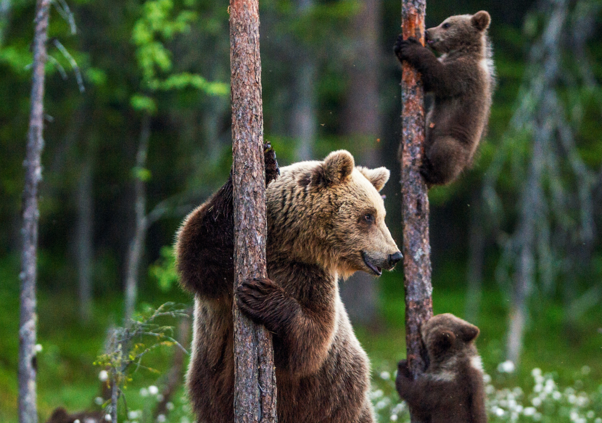
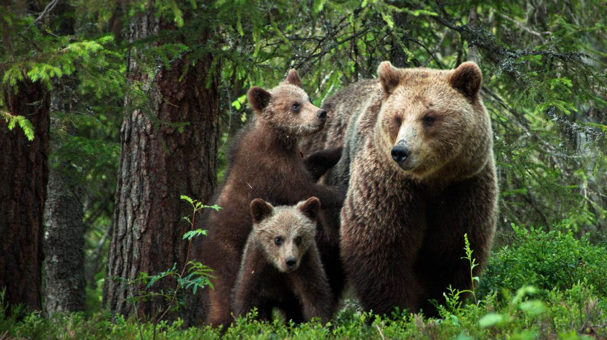
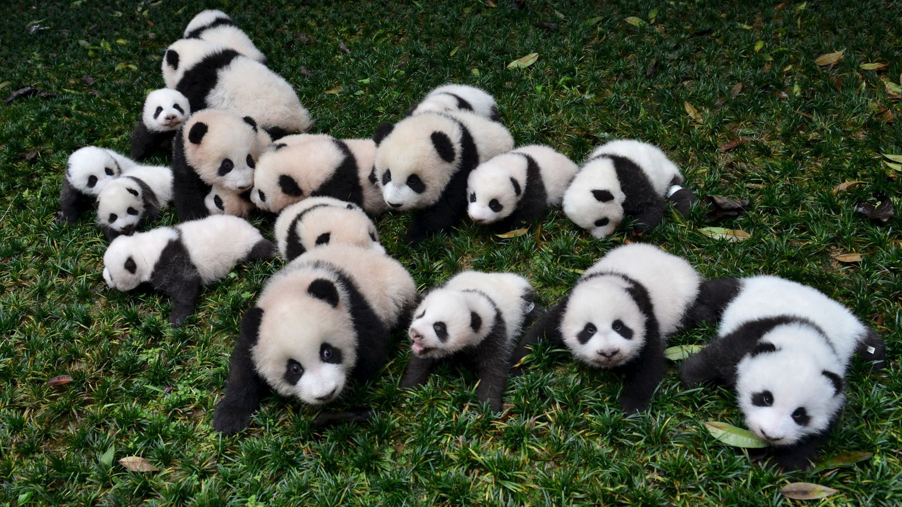
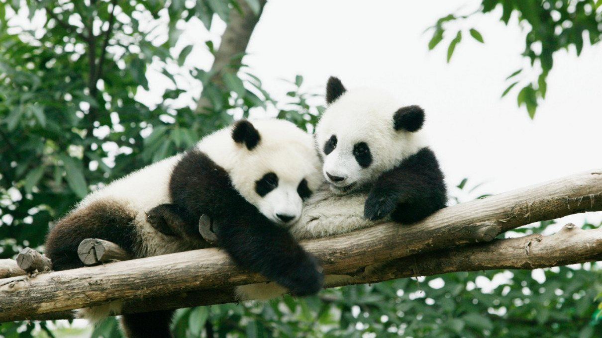
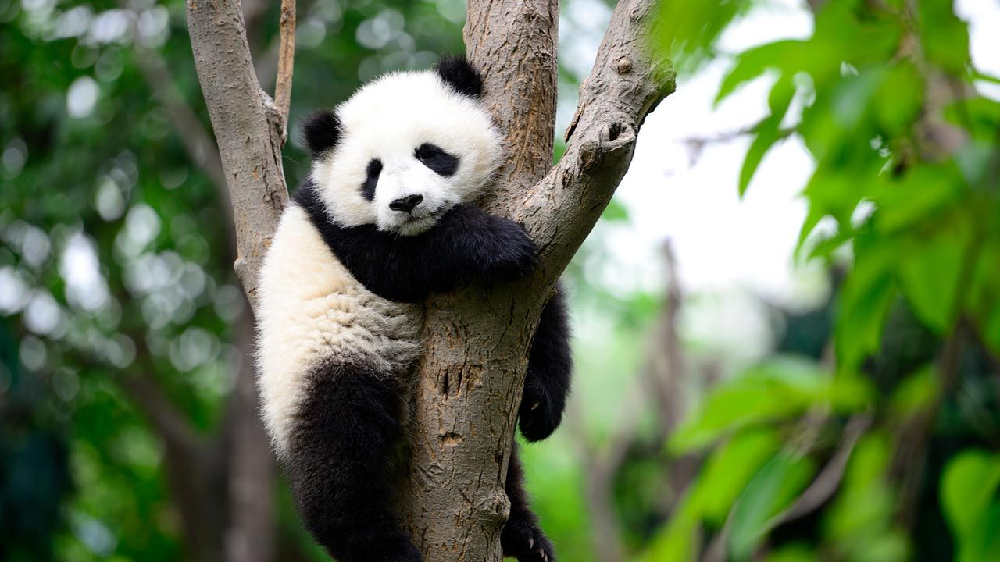

¿Que es un oso?
Los osos o úrsidos son una familia de mamíferos omnívoros.
Son animales de gran tamaño, generalmente omnívoros, ya que, a pesar de su temible dentadura, comen frutos, raíces e insectos, además de carne.
Los osos se caracterizan por su cabeza de gran tamaño, orejas pequeñas, redondeadas y erectas, ojos pequeños, un cuerpo pesado, robusto y una cola corta.
Las patas son cortas y poderosas, con cinco dedos provistos de uñas fuertes y recurvadas garras.

Tienen los cerebros más grandes y complejos en comparación con otros mamíferos terrestres de su tamaño. Utilizan su inteligencia para una serie de comportamientos, como recordar ubicaciones de comida y camuflar su olor para acercarse sigilosamente a sus presas.
Información sobre los Osos
| Nombre científico | Características | Hábitat |
|---|---|---|
| Ursus arctos | Cabeza grande, orejas pequeñas, cuerpo robusto. | Bosques, montañas, tundras. |
| Ursus americanus | Cabeza redonda, orejas pequeñas, pelaje negro o marrón. | Bosques, montañas, regiones árticas. |
| Ursus maritimus | Cabeza larga, cuerpo largo y esbelto, pelaje blanco. | Regiones árticas, plataformas de hielo. |
Galeria de Osos




